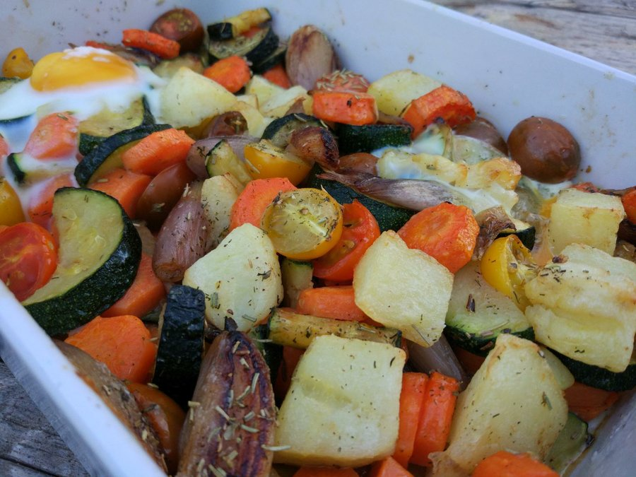

Volver al índice
Verduras al horno

Descripción
Deliciosa receta de verduras al horno, fácil de hacer, apta para todo tipo de comensales y barata!
Ingredientes (3 porciones abundantes)
- 4 papas medianadas
- 3 batatas grandes
- 3 zanahorias
- 4 dientes de ajo
- 2 cebollas
- 2 zapallitos
Instrucciones
- Cortar todas las verduras en trozos medianos.
- Tirarle aceite de oliva y especias a todas las verduras y mezclarlas con las manos para que las especias y
aceite contacte con todas las verduras
- Prender el horno a temperatura mediana
- Colocar las verduras en una o dos bandejas de horno y meterlas en el horno
- 30' despues de haber puesto las verduras en el horno, retirar las bandejas y dar vuelta las verduras para que
no se quemen contra la baneja, y volver a meter en el horno
- Luego de unos 20' chequear la cocción de las verduras. Retirar cuando las papas estén cocinadas.
- A comer! Cuidado de no quemarse la boca!